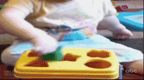
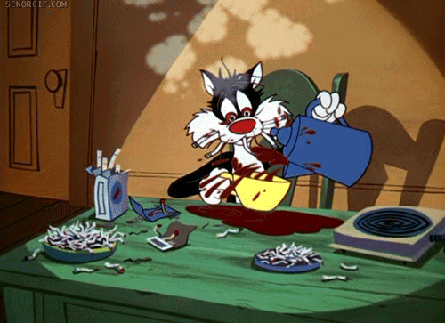

Hello world
Awesome code.
Everybody wants.
Spaghetti code...

No need for tests...
No, really...
Or else...
Debugging "THAT"?
Really?

Microsoft
Windows NT Kernel
What a developer said
Why?
New stuff is better at reviews
Can't touch other's code. Others get angry if they have to mantain your patches.
You can't modify working interfaces if they are public.
Someone
might
be using them.
Don't fear reviews
What to do?
Keep It Simple.
Don't reinvent the wheel.
Simple is better.
Be coherent.
Is there any master?
Richard P. Gabriel
MIT / The Right Thing
Simplicity
Correctness
Consistency
Completeness
[1]
New Jersey School / Worse is Better
Simplicity
Correctness
Consistency
... can be sacrified
Completeness
is not
that
needed
Comparison
Empower yourself
Questions / Bye!
Thanks to:
shwr.me
Devops Reactions
Slides at:
http://bit.ly/dsi-slides